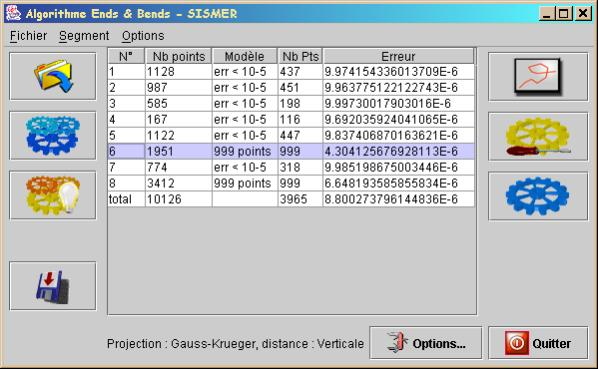
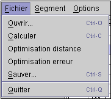
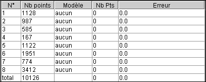
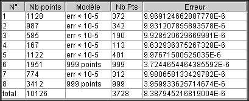
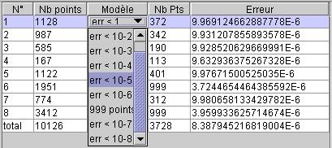
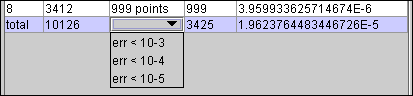
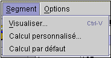

La fenêtre principale quatre parties :
|
Ouvrir un fichier de navigation... Permet de charger en mémoire un nouveau fichier de navigation, les données préalablement chargées sont perdues. |
|
|
Calculer les modèles Effectue le calcul des modèles selon l’algorithme de base adapté, décrit ici. |
|
|
Optimisation sur le point le plus éloigné Effectue le calcul d'un modèle pour chaque segment, de façon à obtenir exactement 999 points au total (détails). |
|
|
Sauvegarder les résultats… Sauvegarde les données réduites au format des fichiers résumé de la base SISMER. |

On retrouve dans le menu « Fichier », les même fonctionnalités que sur les boutons.
Les items « Ouvrir… », « Calculer », « Optimisation distance » et « Sauver » correspondent respectivement aux boutons « Ouvrir un fichier de navigation… », « Calculer les modèles », « Optimisation sur le point le plus éloigné » et « Sauvegarder les résultats… ».
On trouve en plus un item « Optimisation erreur » dont la fonction est décrite plus loin.
La liste centrale contient la liste des segments qui sont chargés en mémoire.
Au lancement de l’application cette liste est vide, elle se rempli après le chargement d’un fichier de navigation. Seule les deux première colonnes sont alors renseignées (N° et Nb points).
Dans cet état, la liste prend l’apparence suivante :

Après le calcul des modèles, par n’importe lequel des moyens proposés, les autres colonnes de la liste sont renseignées.
Dans cet état, la liste prend l’apparence suivante :

Dans l’exemple montré ci-dessus, les 8 premières lignes représentent chacune un segment. La dernière représente le total des points et des erreurs de tous les segments.
Les colonnes ont la signification suivante :
|
N° |
numéro d'ordre du segment |
|
Nb points |
nombre de point dans le segment avant l'optimisation |
|
Modèle |
nom du modèle sélectionné (voir plus bas le fonctionnement de la liste déroulante) |
|
Nb pts |
nombre de points dans le segment optimisé |
|
Erreur |
erreur due à l'optimisation sur le segment |
Lorsqu'une optimisation a été calculée avec les fonctions « Calcul automatique des modèles » ou, sur un segment, par la fonction « Calcul automatique », jusqu'à 10 modèles peuvent être disponibles sur un segment.
Dans ce cas, une liste déroulante présentant les modèles calculés apparaît sur un clic de souris dans la case « modèle ». La liste contient les noms des modèles, voir les chapitres suivants.

Les colonnes ont la signification suivante :
|
N° |
"total" |
|
Nb points |
nombre de points total dans le fichier de navigation |
|
Modèle |
habituellement vide, sauf quand un modèle globale est choisi (voir plus loin le fonctionnement de la liste déroulante) |
|
Nb pts |
total des nombre de points optimisés, cette valeur doit être inférieure ou égale à 999 pour que le fichier écrit soit valide. |
|
Erreur |
somme des erreurs sur chaque segment. |
La case "modèle" de la ligne total est le plus souvent vide. Sur un clic de souris, une liste déroulante apparaît et propose des critères sur l'erreur. Cette liste est un moyen de définir le modèle par défaut des segments

Si l'on sélectionne un niveau d'erreur, l'application va sélectionner, pour chaque segment et parmi les modèles disponibles, le premier qui pour lequel l'erreur est inférieure au niveau sélectionné. Si aucun modèle ne correspond, le segment n'a aucun modèle sélectionné, il considère donc que le segment n'est pas optimisé.
|
Visualiser le segment… Ouvre la visionneuse de segment, voir ici. |
|
|
Calcul personnalisé… Effectue un calcul personnalisé pour le segment sélectionné, en demandant le nombre de points à obtenir. |
|
|
Calcul par défaut Effectue le calcul des modèles pour le segment sélectionné, selon l’algorithme de base adapté, décrit ici. |

On retrouve dans le menu « Segment », les mêmes fonctionnalités que sur les boutons.
En bas de la fenêtre principale ont trouve trois composants :